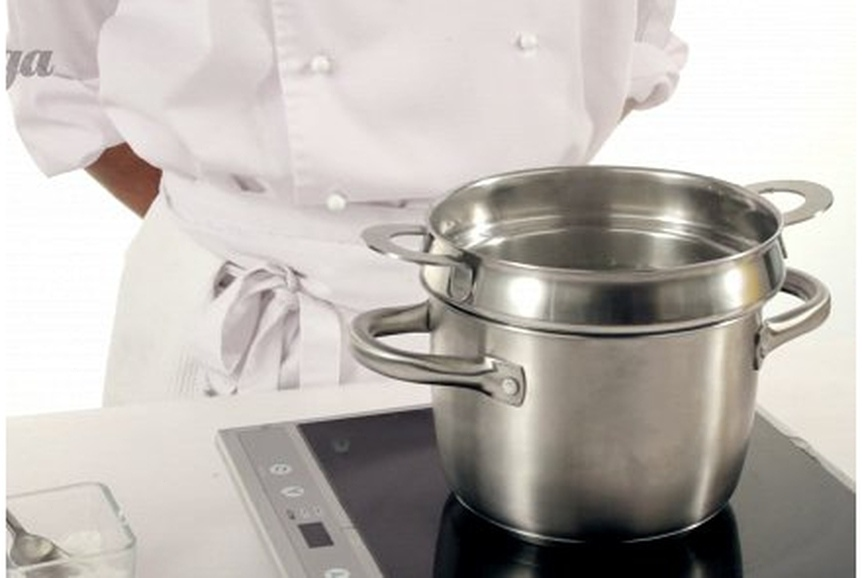
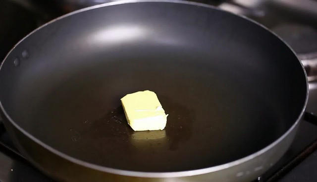
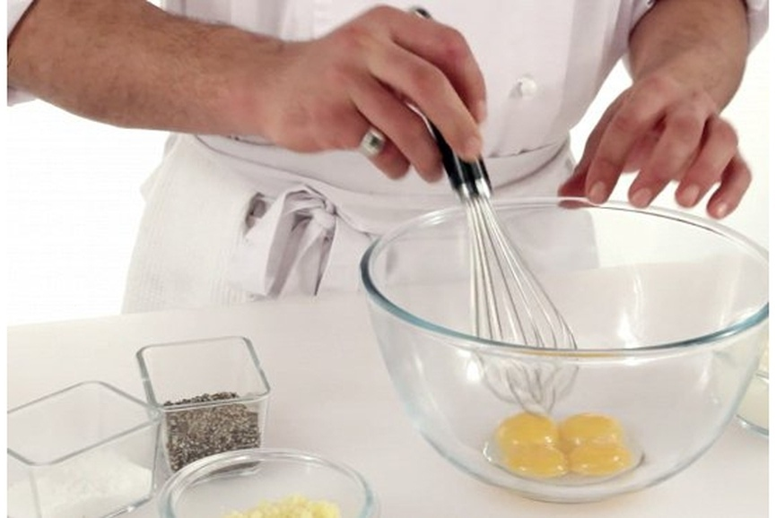
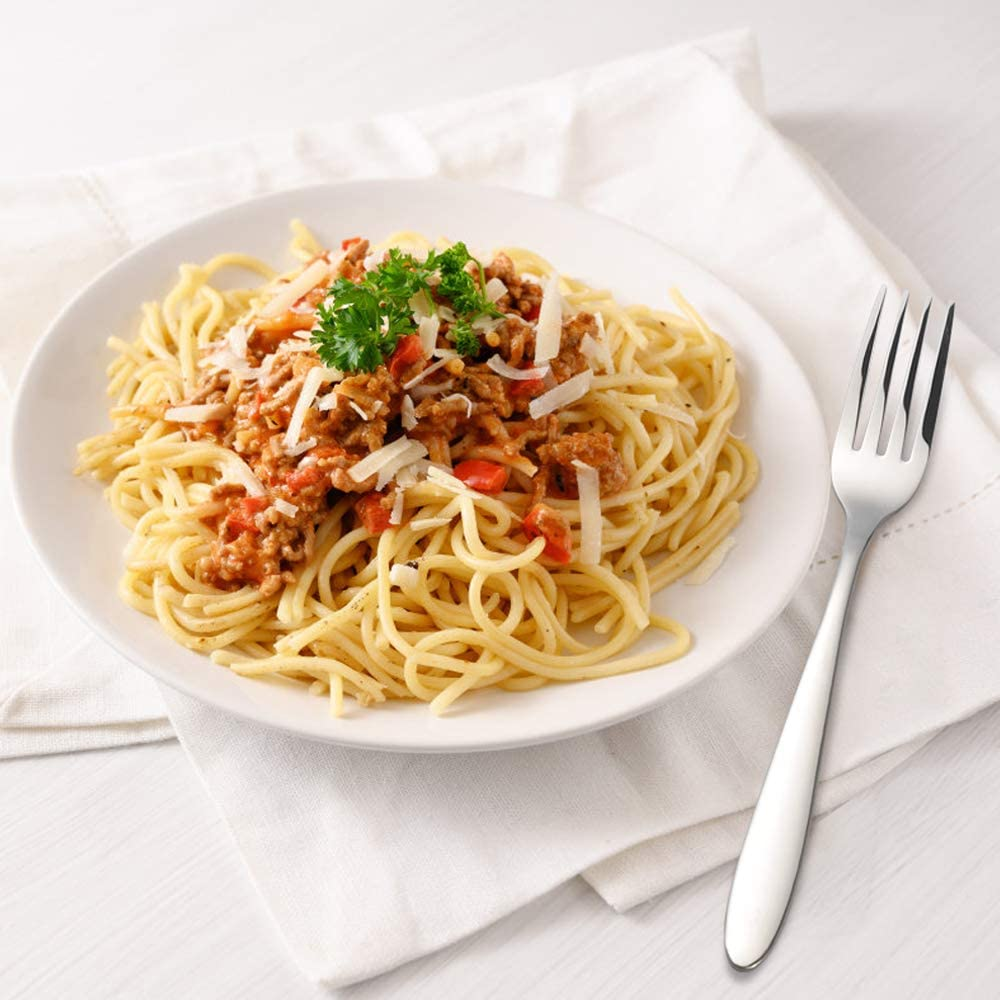

Спагетти карбонара с красным луком
Спагетти карбонара — хоть блюдо и итальянское, оно имеет хорошую популярность во всем мире, в том числе и у нас. Изобретенная когда-то простыми шахтерами, эта простая и сытная паста завоевала сердца и желудки многих. Для карбонары нужно выбирать такие ломтики бекона, где больше мяса и меньше жира. Если его будет много, то, вытапливаясь при готовке, он сделает пасту слишком тяжелой. Можно подавить чеснок и бросить в поджарку. Но, чтобы блюдо приобрело утонченный, еле уловимый аромат, достаточно потомить ломтики чеснока в масле и убрать из сковороды спустя пару минут. Не обязательно использовать в рецепте карбонары спагетти — выбирайте любимые макароны из 500 видов всевозможной пасты. Но только из твердых сортов пшеницы.
Инструкция приготовления
1)Вскипятите воду в большой кастрюле и сварите пасту до состояния аль денте. Обычно для этого нужно варить ее на минуту меньше, чем указано на пачке.

2)Пока паста варится, растопите на сковороде масло и обжарьте на нем мелко нарезанные лук, чеснок и бекон. До мягкости и до отчетливого чесночного и жаренобеконного запаха.

3)Снимите сковороду с огня и в глубокой миске взбейте четыре яичных желтка со сливками и тертым пармезаном. Посолите и поперчите смесь, еще раз взбейте.

4)В готовые спагетти вывалите обжаренные с луком и чесноком кусочки бекона. Влейте смесь сливок, желтков и пармезана, перемешайте. И сразу подавайте, посыпав свеженатертым сыром и черным молотым перцем.


 Войти
Войти